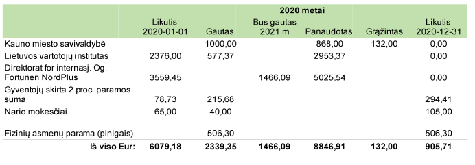

2020 metais Anthropos tęsė pradėtus projektus ir aktyviai vystė naujas veiklos kryptis - inicijuoti kreipimosi laiškai į Nacionalinę Švietimo Agnetūrą dėl vadovėlių turinio ir Europos parlamento narius dėl EU-Mercosur susitarimo, pradėjome dirbti su kultūrų reprezentavimo tematika. Kaip ir daugeliui organizacijų 2020 atnėšė tam tikrų iššūkių - edukacijos, antropologijos diena, paskaitos turėjo persikelti į nuotolinę erdvę, tačiau tai atvėrė ir naujų galimybių kaip platesnė veiklos ir bendradarbiavimo geografija.
Ką nuveikėme?
- • 2020 01 15 Tinklalaidėje The Human Show: Innovation through Social Science publikuojamas pokalbis su kolegėmis Indra Lukošiene ir Ugne Starkute: pokalbis.
- • 2020 01 20 Eurobloge publikuojamas pokalbis su kolege Ugne Starkute apie maisto švaistymą, jo pasekmes klimato krizei ir kaip kiekviena/s/* galime sumažinti išmetamo maisto kiekį: https://euroblogas.lt/2020/01/20/patarimai-kaip-sumazinti-maisto-svaistyma-namuose/
- • 2020 01 - 2020 10 vedame antropologijos dirbtuves „Maistas (nebe)maistas” apie maisto industriją, išmetimą ir kaip tai susiję su klimato katastrofa. Susipažįstame su aibe puikių moksleivių ir mokytojų Kaune, Grigiškėse, Klaipėdoje, Vilniuje. Programa finansuojama Lietuvos vartotojų instituto ir ES lėšomis. Šiek tiek vaizdų čia: https://www.facebook.com/anthropos.lt/posts/619532408842824
- • 2020 01 - 2020 03 Teikiame kelis projektus Iniciatyvos Kaunui bei Lietuvos Kultūros tarybai. Gauname finansavimą „Antropologijos dirbtuvės: globali nelygybė ir savanorystė” finansavimui! Deja, kitų projektų svarstymas nutraukiamas dėl karantino.
- • 2020 03 - 2020 05 Vyksta Anthropos internetinio puslapio rengimo darbai.
- • 2020 04 04 suplanuotoji „Antropologijos diena: socialinis veiksmas” – taigi antrasis viešas šio projekto renginys Lietuvoje, - perkeliama į vėlesnį laiką dėl vykstančios pandemijos.
- • 2020 05 - pateikiamos paraiškos maisto ir globalios nelygybės dirbtuvėms vesti naudojantis Kultūros paso programa. Patvirtinamos abi programos: „Antropologijos dirbtuvės: maisto sistema ir klimato kaita” bei „Antropologijos dirbtuvės: globali nelygybė ir kultūrų reprezentavimas”!
- • 2020 05-06 „Maistas (nebe)maistas” dirbtuvės vedamos nuotoliniu būdu.
- • 2020 06 09 Parengiame ir publikuojame viešą laišką Nacionalinei švietimo agentūrai dėl kultūrų reprezentavimo geografijos vadovėliuose. Laišką galite perskaityti čia: https://docs.google.com/document/d/1BIFz9AoSIM-GzsZnHf6AT3aW0qjU2IuZLFc_sEXtf5Y/edit
- • 2020 06 24 parengiame ir publikuojame straipsnį apie maisto ir klimato krizės sąsajas: https://www.delfi.lt/plius/mokslas-inovacijos/valgome-ne-maista-o-nafta-energija-kuria-ismetame.d?id=84597869
- • 2020 07 parengiame ir publikuojame straipsnį apie antropologijos taikymą: https://anthropos.lt/socialinisveiksmas.html
- • 2020 07 08 ir 22 Kauno viešosios bibliotekos kvietimu vedame dirbtuves - pikniką „Apie tvarų maisto vartojimą” https://fb.me/e/14kU7pjKo
- • 2020 08 03-05 vyksta antropologijos dirbtuvės „Globali nelygybė ir savanorystė”. Kaip viskas atrodė pamatysite štai čia: https://www.facebook.com/anthropos.lt/posts/744729082989822
- •2020 08 19-20 vyksta Antropologijos diena 2020: Socialinis veiksmas, dirbtuvės ir diskusijos. Tikslas: per dirbtuves ir diskusijas pristatyti, kokią taikomąją perspektyvą turi socialiniai mokslai. Renginio dalyviai: Artūrs Pokšans (antropologas, Tartu universiteto doktorantas, Latvijos universiteto lektorius), doc. dr. Jekaterina Lavrinec (Vilniaus Gedimino technikos universiteto docentė, antropologė, urbanistė, aktyvistė), dr. Kristina Jonutytė (Vytauto Didžiojo universiteto lektorė, antropologė), prof. dr. Roberto E. Barrios (Naujojo Orleano universiteto profesorius).
Dirbtuvių ir diskusijos video įrašai:
https://www.youtube.com/watch?v=BNZkV42gtL4&t=1821s&ab_channel=Anthropos
https://www.youtube.com/watch?v=6ru_QfTuUxA&t=1s&ab_channel=Anthropos
- •
2020 08 31 publikuojamas Anthropos pokalbis su Jekaterina Lavrinec jos laidoje Homo cultus. Žmogus ir miestas. Klausykite čia: https://www.lrt.lt/mediateka/irasas/2000119128/homo-cultus-zmogus-ir-miestas-kaip-antropologai-gali-prisideti-prie-teigiamu-pokyciu-siuolaikiniuose-miestuose
- • 2020 09 - praktiką pradėjo atlikti VDU sociologijos ir antropologijos studentė Sandra Siriūnaitytė, kuri buvo nepamainoma pagalbininkė mūsų darbuose, surinkusi gausybę medžiagos Anthropos veiklos plėtojimui!
- • 2020 09 Paraiškos rengimas Antropologijos dienos finansavimui tarptautinį kvietimui „Local Climate Justice Activism in Central and Eastern Europe” . Finansavimas nebuvo gautas.
- • 2020 09 06 Popup.lt kvietimu dalyvaujame diskusijoje „Mainytis ir dalintis. Ar tai tas pats?” tvarios mados diskusijų platformoje.
- • 2020 09 16 Paskelbiame viešą laišką kuriuo siekiama atkreipti Lietuvos EP atstovų dėmesį į EU-Mercosur susitarimo žalą klimato kaitai ir žmogaus teisėms. https://www.facebook.com/anthropos.lt/posts/777079309754799
- • 2020 09 20 Anthropos Kaunas 2022 Fluxus Labas ekskursijos po Šančius dalyves/ius/* supažindina su etnografiniais metodais, kurie gali padėti vykdant iniciatyvas bendruomenėse. https://www.facebook.com/anthropos.lt/posts/783646949098035
- • 2020 10 pateikiamos paraiškos globalizacijos ir etniškumo bei lyčių lygybės ir lytiškumo dirbtuvėms vesti naudojantis Kultūros paso programa. Patvirtinama programa „Globalizacija ir etniškumas šiandienos pasaulyje”.
- • 2020 10 22 Kauno viešosios bibliotekos kvietimu vykdome mokymus siekiant supažindinti bibliotekų darbuotojus su klimato kaitos diskursais.
- • 2020 10 29 Nacionalinės švietimo agentūros kvietimu parengiame ir įvykdome seminarą ir diskusiją „Kultūrų reprezentavimas: antropologinė perspektyva”, skirtą vadovėlių autoriams ir rengėjams. Seminaro pagrindu parengiama atmintinė, skirta sumažinti stereotipiškų, diskriminacinių ir kolonialistinės istorijos apibrėžtų reprezentacijų vadovėliuose.
Kreipimosi laiškas: https://docs.google.com/document/d/1BIFz9AoSIM-GzsZnHf6AT3aW0qjU2IuZLFc_sEXtf5Y/edit
- • 2020 11 - 2020 12 Kartu su Šiaurės ministrų tarybos buru Lietuvoje, Kauno technologijos institutu, Kopenhagos verslo institutu, Suomijos gamtinių išteklių institutu, EIT FOOD, ir LIDL planuojame ir teikiame projekto „Let’s not waste food” (liet. Nešvaistykime maisto) paraišką ir laimime finansavimą iš Norden!
- • 2020 11 20 Anthropos drauge su organizacijomis partnerėmis - Estijos antropologijos asociacija, Tartu antropologijos studentų organizacija NEFA ir Jaunradės Laboratorija - surengia susitikimą, apibendrinantį projekto „Socialinis mokslas socialiniam veiksmui!” veiklas ir baigiamuosius darbus.
- • 2020 11 Paraiškos projektui „Kūrybinės etikos dirbtuvės: kultūrų reprezentavimas“ finansuoti rengimas ir teikimas Lietuvos kultūros tarybai.
- • 2020 12 3-4 Vedame dvejas dirbtuves apie maisto sistemą ir kultūrų reprezentavimą Skuodo rajono moksleiviams nuotoliniu būdu.
- • 2020 12 11 Vedame viešą paskaitą apie organizacijos patirtį ir antropologijos taikymą VU ir VDU studentams.
- • 2020 12 07-31 Atliekame užsakytą kokybinį tyrimą apie privačios bankininkystės paslaugas. Tyrimas vyko trijose Baltijos šalyse, „Anthropos” atliko tyrimą Lietuvoje.
- • 2020 11 19 Tinklalaidėje “Reikalingi” su Renida Baltrušaityte kalbėjomės apie organizaciją ir antropologijos taikymą: https://open.spotify.com/episode/1ZYwqjagysKkpws8VrwcXx?si=OXK3DwadTsi7IYdiGwlQkw
